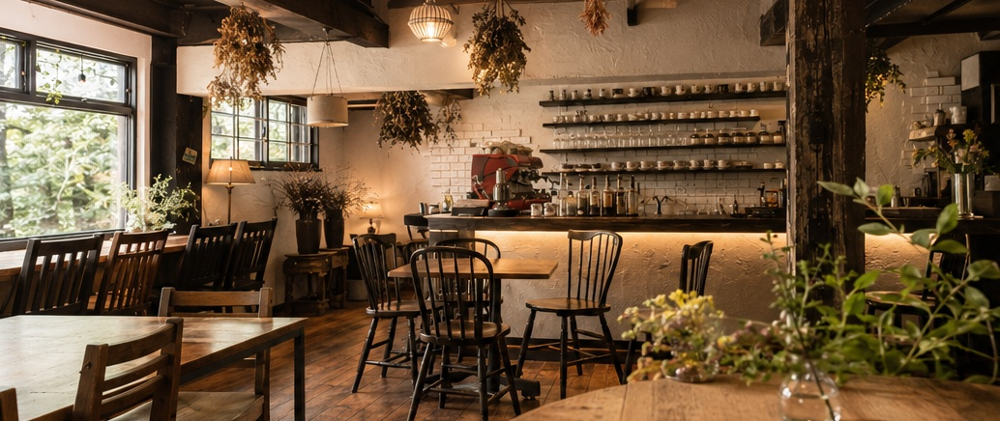
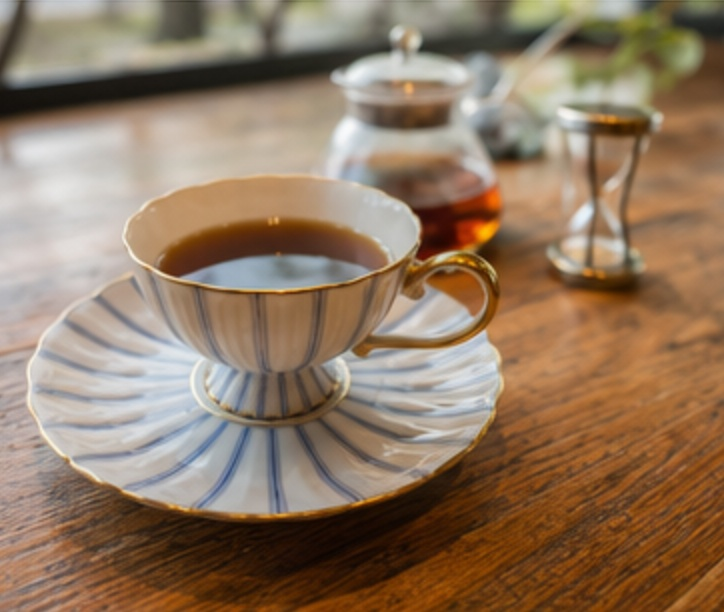
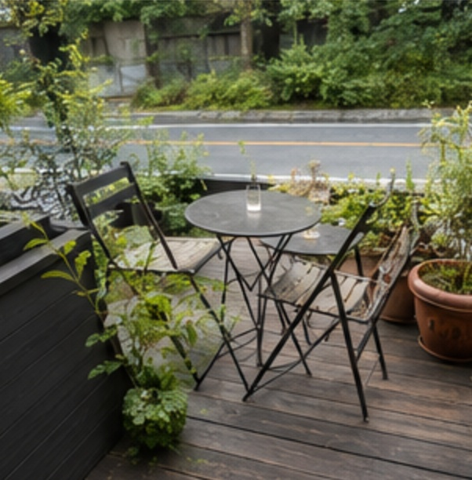
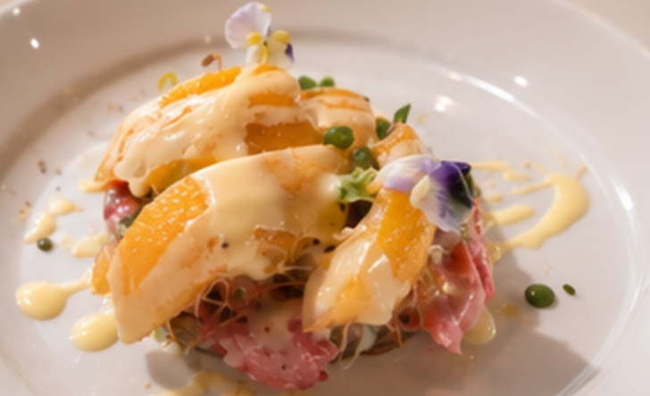
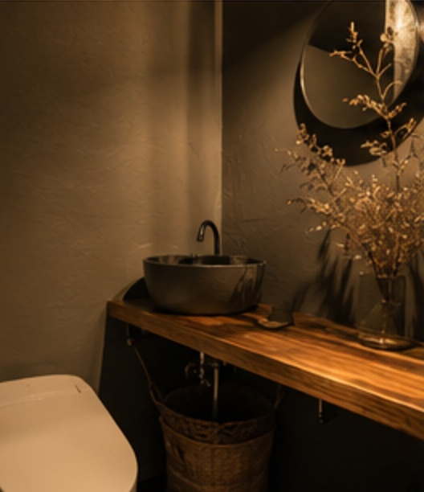
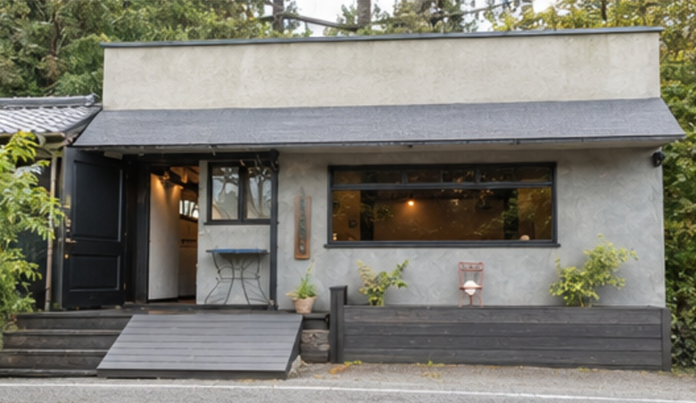

01 — CONCEPT
鎌倉駅周辺の人混みから少し離れた、山側の常盤エリア。ここでは、会話を楽しみながら、ゆっくりと食事やお茶の時間を過ごせます。
料理の味わいはもちろん、盛り付けや器、インテリア、ドリンクの一杯まで。食事の時間そのものを大切にしたい方のためのカフェレストランです。


パスタやピザ、前菜、デザートまで、食事目的でも訪れやすいカフェレストランです。ランチやディナー、カフェ利用まで、気分に合わせて過ごせます。
観光地のにぎわいから少し離れた常盤エリアで、会話を楽しみながらゆっくり過ごせます。散策や観光の途中に立ち寄りやすい一軒です。
盛り付けや食器、インテリア、ドリンクの種類まで楽しめる空間です。初めての方や観光で訪れる方にも、自然にくつろげる雰囲気があります。
03 — SPACE & TERRACE
ウッド調の落ち着いた店内で、食事やドリンクをゆっくり。屋内席のほか屋外テラスもあり、静かに会話を楽しめます。




04 — FIRST VISIT
ご来店前に知っておくと安心なことを、まとめました。
変更される場合があるため、ご来店前にInstagramやお電話での確認がおすすめです。
お食事でのご利用や混み合う時間帯は、事前のお電話が安心です。
鎌倉駅から少し離れているため、車・バス・散策ルートと合わせてのご来店が便利です。駐車場の場所は分かりにくい場合があるため、事前確認がおすすめです。
05 — INFORMATION